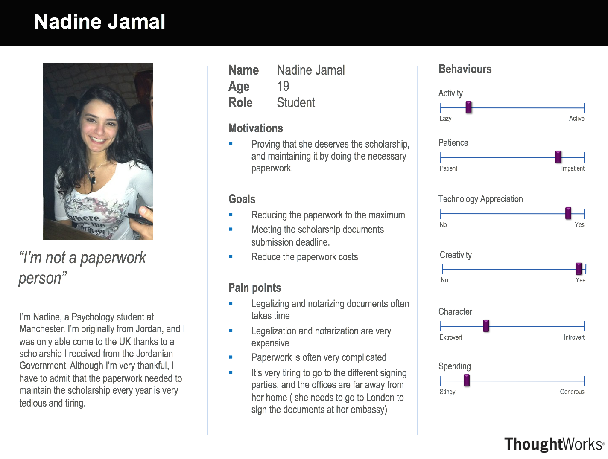
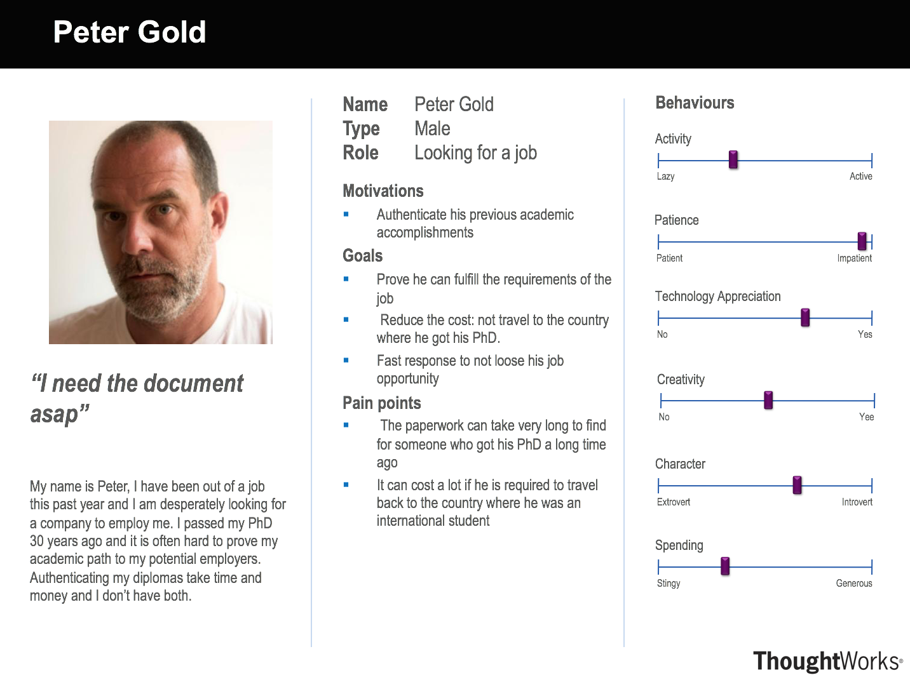
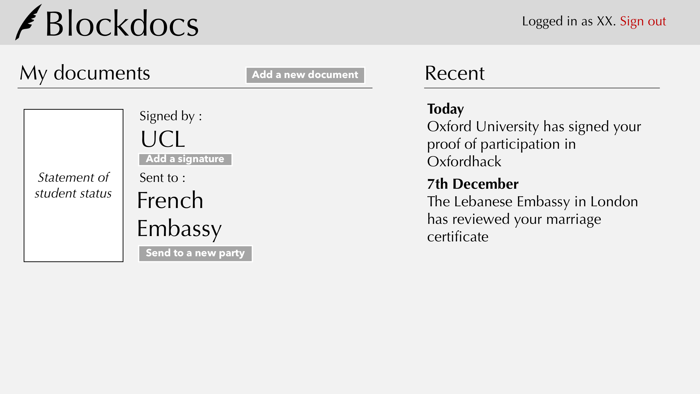
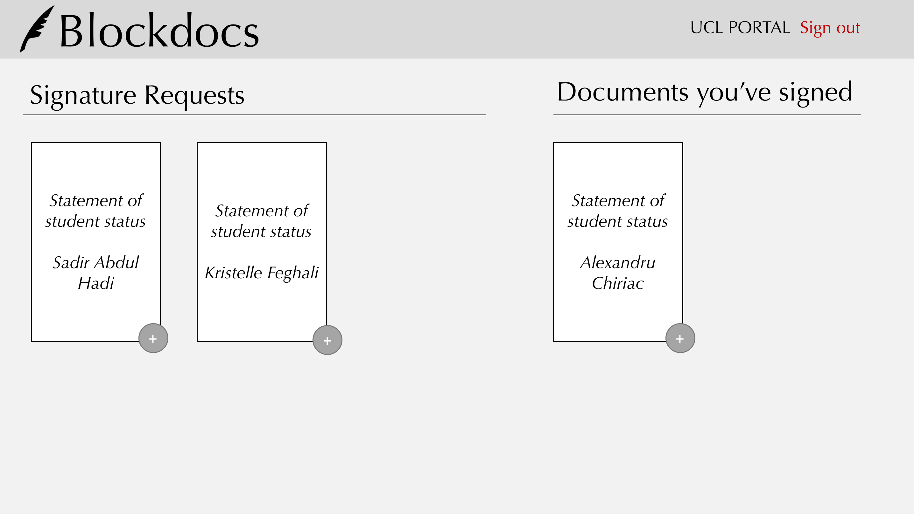

The requirements
MoSCoW
Because of the disruptive and challenging nature of our project, as well as the very general brief we got at the beginning of the year, our requirements took a lot of time to become clear. However, we believe they now describe the general behaviour of the software we want to build.
Must have
Should have
Could have
Won't have
Personas
 Scenarios
One of the scenarios we wrote is the following:
1-Nadine has a scholarship at UCL and receives funds from the Jordanian government. She needs to authenticate her student of statement status by asking UCL to sign the paper. However, the process is not that simple and she has to go through many steps before receiving any funds. It is expensive and takes too long. 2-However, Nadine has an idea. She decides to use BlockDocs to make the process quicker and easier. 3-She uploads her student of statement status to the website and sends a signature request to UCL. 4-After UCL signs the document she can send it to the Jordanian government that can be sure that the document is authentic.
Sketches and Storyboard
Use Cases
Prototype
While considering alternatives for the developer platforms we felt that mobile applications are not very often trusted for operations dealing with confidential documents. Hence, we decided to build a web app.
The regular user portal
Signing authority portal
